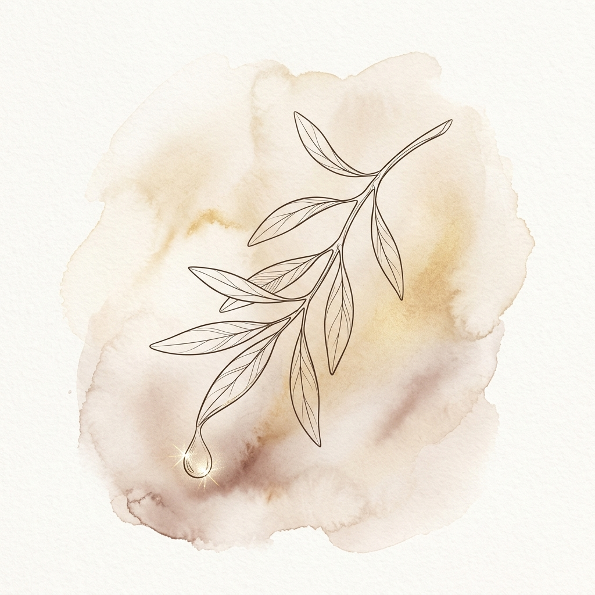

Esperança
Oi meu amor, é... o acampamento está chegando no fim e com isso hoje é o dia da chegada no poli onde vou te ver denovo nesses ultimos dias senti muita saudades de você, e hoje finalmente vou te ver, e te abraçar, um abraço que eu tanto amo A saudade apertou, mas ela serviu para me mostrar ainda mais o quanto você é essencial na minha vida. Como eu já te disse Você foi um caminho de volta na minha vida e como o tema do meu Deco é "Sou lugar de Volta" Você foi o meu lugar de volta pra igreja. Então nesse ultimo dia, deixo pra você a música tema do meu deco.
"Agora, pois, permanecem estas três: a fé, a esperança e o amor, mas a maior destas é o amor."
1 Coríntios 13:13
Uma Oração por Nós
"Senhor Deus, obrigado por ter nos guiado e guardado durante esses dias. Abençoa o nosso reencontro, acende em nossos corações a chama da esperança e faz com que o nosso amor continue crescendo sob a Tua luz e proteção. Amém."